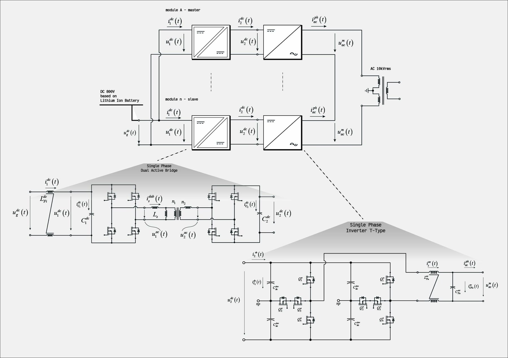
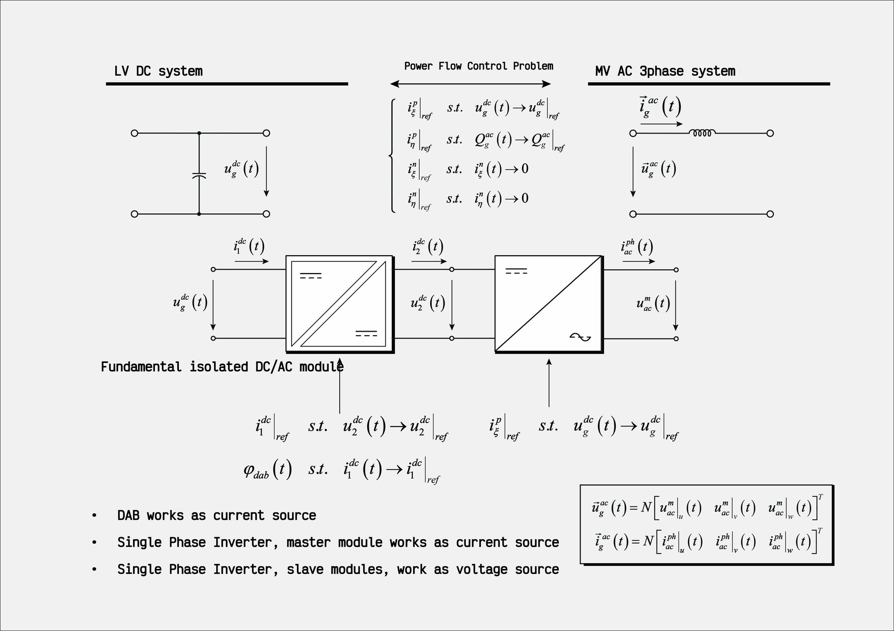
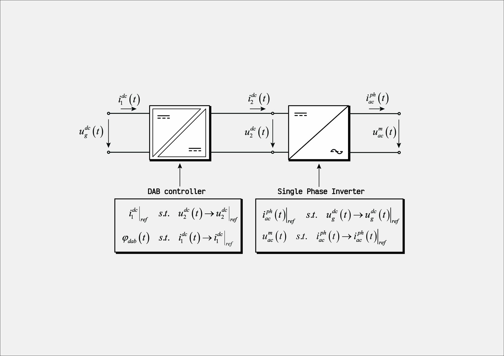
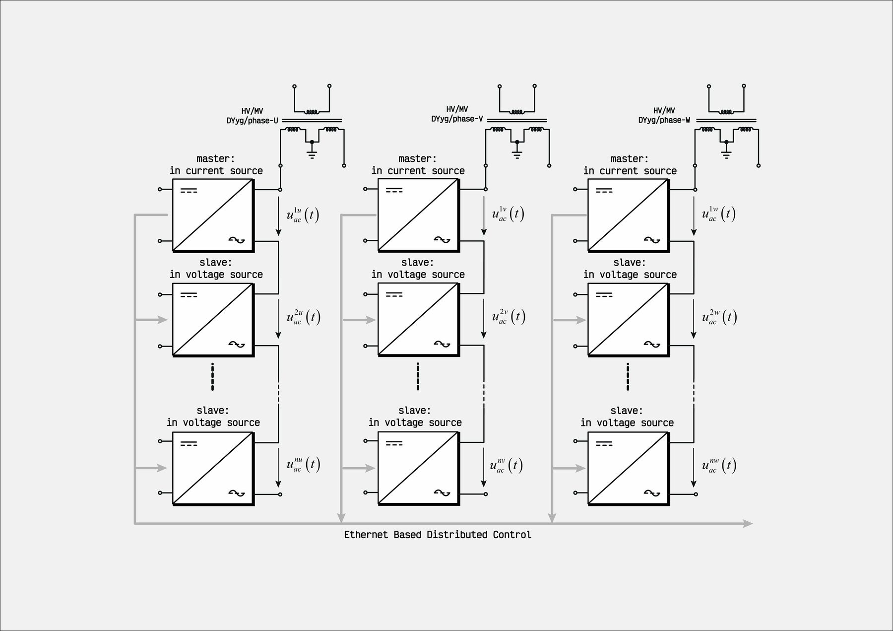

Solid-state transformers
Modular SST built from isolated DC/DC stages (DAB or CLLC) and three-level T-type single-phase inverters, paralleled on the DC side and series-connected on the AC side, with distributed control.

What it is
A solid-state transformer is built here from modules: each module is a galvanically isolated DC/DC converter followed by a single-phase inverter. The modules share the low-voltage DC side in parallel and stack their inverter outputs in series on the AC side, so the AC voltage is divided among them and the total power is the sum of the module ratings.
The study compares the isolated stage (single-phase DAB versus resonant CLLC) feeding a three-level T-type single-phase inverter, and includes first-cut sizing scripts for the medium-frequency transformers. Simulation results are discussed in the technical note listed under Resources.
Control architecture
The DAB regulates its output DC voltage and behaves as a current source; the inverters share the AC voltage: the master module is current-controlled and the slave modules are voltage-controlled, with references exchanged over a distributed (Ethernet-based) control layer.
Every converter runs on its own local time base in the model. The modulators generate the control triggers, and the local clocks can be detuned to study what time sliding between modules does to the waveforms.
Figures


